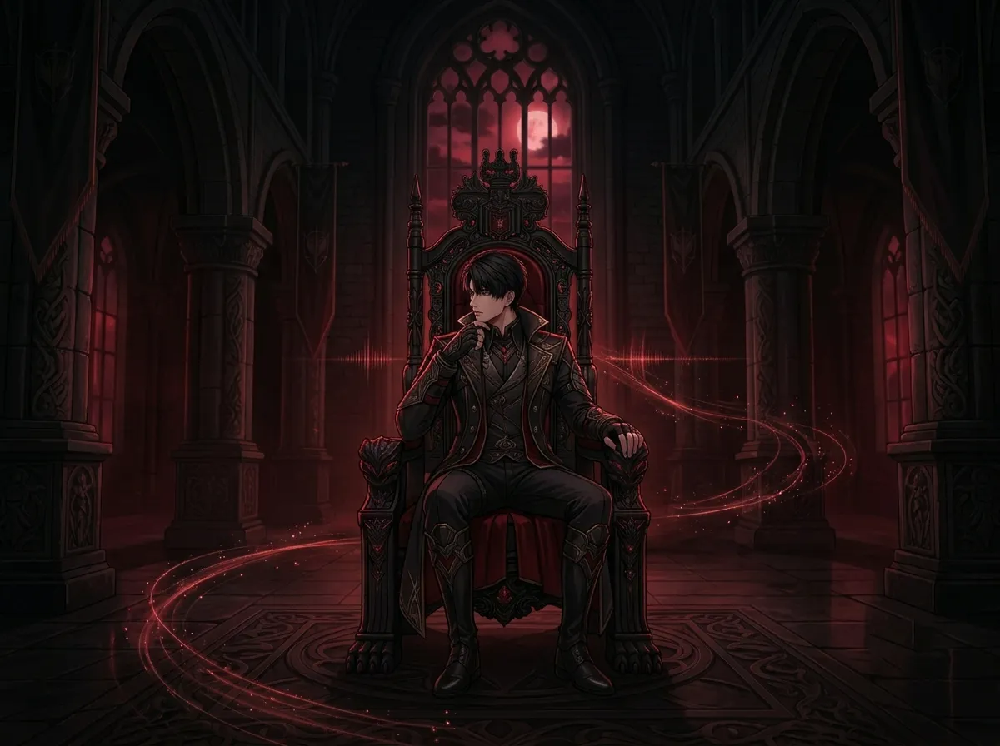
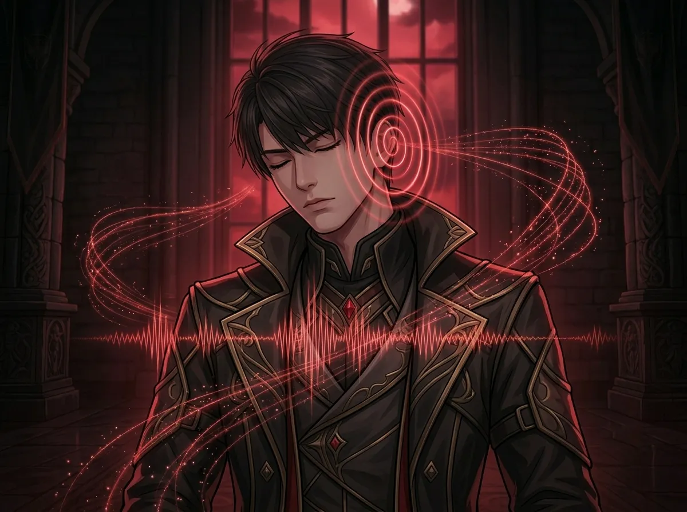
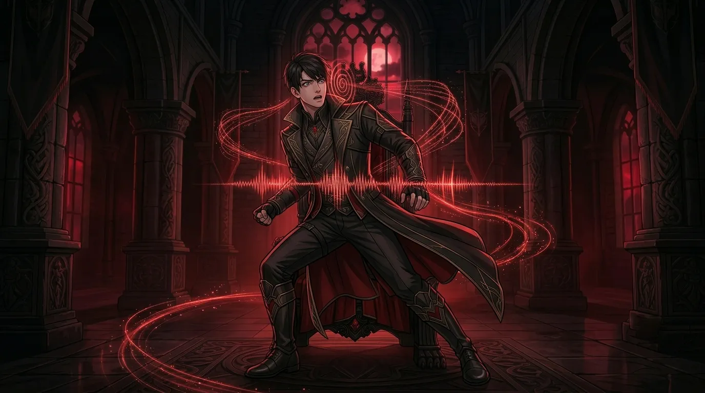
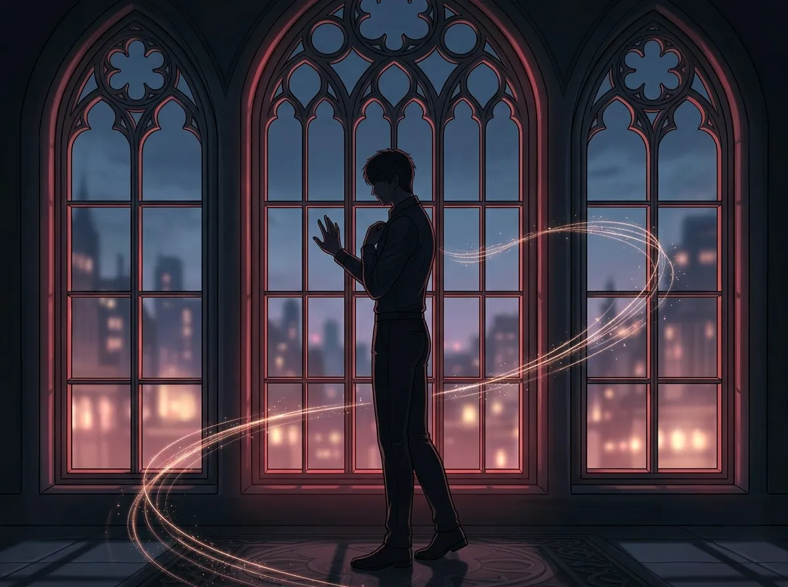

He can recognize her from blocks away. He never tells her.
He hears her before he sees her.
Every time. Without fail. From blocks away. From down the hall. From the other side of a closed door.
He doesn't try to hear her. He doesn't listen for her. He just... hears. Her footsteps are different. They cut through the noise of the city, the N109 Zone, the chaos of everything else.
He has never told her how well he knows the sound of her walking. He has never told her that her footsteps are the only ones he has ever memorized.
This is the story of that sound.
He didn't mean to learn her footsteps. He didn't try. He doesn't try to learn anything about anyone. People are noise. They walk, they talk, they make sounds that blend into the background of his world.
Her footsteps were different.
He heard them once. Twice. Three times. And then he couldn't unhear them.
Her steps are lighter than most. Quicker. There's a rhythm to them—a confidence that doesn't need to announce itself. She doesn't hesitate. She doesn't slow down. She walks like she knows exactly where she's going, even when she doesn't.
He noticed. He didn't mean to notice. But he did.
He hears her because she doesn't sound like anyone else. Most people walk in N109 with fear in their footsteps. They hurry. They shuffle. They try to be quiet.
She walks like she's not afraid. She walks like she belongs there. She walks like she knows he's listening—even though she doesn't.
He hears her because she sounds different. And she sounds different because she is different.

The throne room is quiet. It's always quiet. The only sounds are the hum of the lights, the distant noise of the city below, and Mephisto's occasional shift of wings.
Then he hears it. Footsteps. Coming down the hall.
He knows them. He knows her. He knows she's coming before she reaches the door.
He doesn't move. He doesn't smile. He doesn't give anything away. But he hears her. And something in his chest shifts. Just slightly.
She knocks. He says "Come in." He already knows it's her.
She doesn't know that. She never knows that.
The throne room is quiet. It has always been quiet. He has spent years in this silence. It is his comfort. His prison. His home.
Then her footsteps break the silence. And the silence feels different. It feels like waiting. It feels like anticipation. It feels like something is about to happen.
He doesn't know when that changed. He doesn't know when her footsteps stopped being noise and started being something else. Something he waits for.
He waits for her. He always waits for her. She never knows.

He can tell how she's feeling from the way she walks.
He doesn't try to. He just does. Her footsteps are a language he has learned without studying. A dialect he speaks without knowing the words.
When she's in a hurry, her steps are faster. Lighter. When she's tired, they drag. Just slightly. Not enough for anyone else to notice. But he notices.
When she's happy, there's a bounce. A skip in the rhythm. When she's angry, they're heavier. More deliberate. More precise.
He has cataloged all of these variations. He has memorized them. He doesn't know why. He just does.
She doesn't know he reads her footsteps. She doesn't know she's telling him everything she doesn't say out loud.
He doesn't tell her. He wouldn't know how. "I know you're tired because your left foot drags half a centimeter more than usual" is not something you say to someone.
But he knows. He always knows. And when she walks into the room, he has already prepared himself for what she's carrying. The mood. The weight. The things she hasn't said yet.

There was a day. A day he doesn't talk about. A day he heard her running.
Not walking. Not approaching. Running. Fast. Urgent. The rhythm was wrong. Something was wrong.
He heard it before he knew what it meant. He heard it and his body moved. He was out of his chair, out of the room, moving toward the sound before his mind caught up.
She was fine. She was fine. It was nothing. A false alarm. A misunderstanding.
But he had heard her running. He had heard the fear in the rhythm. He had felt something break in his chest at the sound.
He didn't tell her. He never tells her. But he has never forgotten the sound of her running. And he has never fully recovered from hearing it.
He has heard many sounds. Screaming. Crying. Begging. He has heard the sound of people dying. He has heard silence where there should have been sound.
None of those sounds prepared him for the sound of her running. Not walking. Running. Urgent. Afraid.
He didn't know he could be afraid of a sound. He didn't know a sound could make him move before he thought. He didn't know he cared that much.
He knows now. He has always known. But that day, he heard it. In the rhythm of her footsteps. In the fear he couldn't unhear.

He waits for the sound.
He doesn't admit it. He doesn't talk about it. But when she's gone, he waits. He listens for the sound of her footsteps coming back.
He can't explain it. It's not a choice. It's not a decision. It's just something his body does. Something his ears do. Something his heart does.
He hears her footsteps on the stairs. He hears her footsteps in the hallway. He hears her footsteps approaching the door.
And then she's there. And the waiting is over. Until the next time.
He doesn't tell her he waits for the sound. He doesn't tell her he counts the minutes between footsteps. He doesn't tell her she is the only person whose footsteps he has ever memorized.
He just hears her. And that is enough. For now.
He waits for her. Every time. It is not a conscious decision. It is not a choice he makes. It is a habit he didn't know he had formed.
He hears her footsteps. The rhythm is familiar. The rhythm is hers. And something in him settles. Something in him says: "She's here. She's safe. She's back."
He doesn't tell her he waits. He doesn't tell her the silence is harder to bear when she's not in it.
He just hears her. He hears her approaching. He hears her walking toward him. And the waiting stops. For a moment.
He hears her before he sees her. Every time. From blocks away. From down the hall. From the other side of a closed door.
He never tells her. He never tells anyone. He doesn't know how to explain that her footsteps are the only sound he has ever memorized.
He has heard many sounds. Screaming. Crying. Silence. The footsteps of people who are afraid. The footsteps of people who want something from him.
Her footsteps are different. Her footsteps are the sound of her coming back. And that is the only sound he wants to hear.